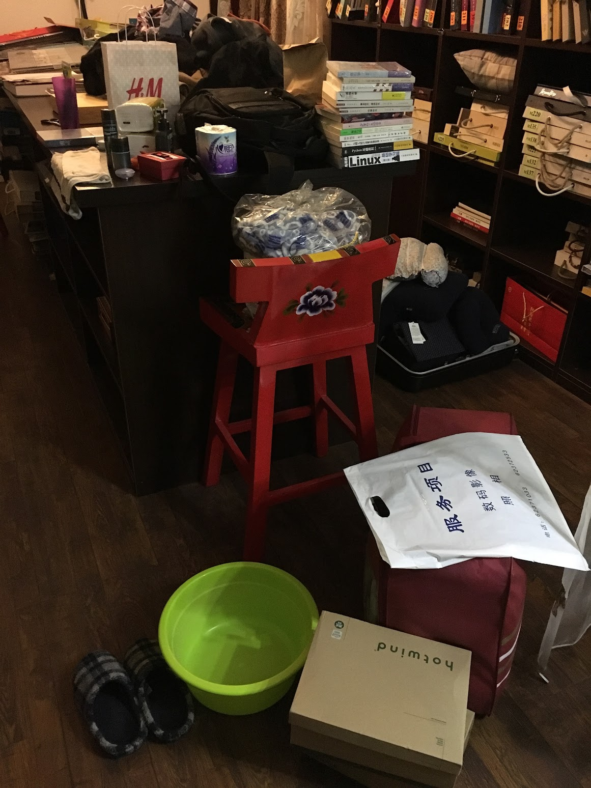

今天是国庆节最后一天，可是我极度不想上班，所以又继续请了 2 天假。
最近这大半年来我特别不愿意面对工作，对工作持续性没有热情，偶尔有热情的时候是在纯粹写代码的那几个小时。那几个小时里不用考虑和人打交道，不用考虑怎么在晨会、周会上汇报工作，不用去迎合他人做让自己违心的事。
还有个原因是我不喜欢被当成未成年人那样去管理，我更喜欢靠完全的自驱去工作，和 LD 沟通好「双赢协议」后他的工作就完成了、就可以退场了，他所要做的就是做好后勤工作，而不是每天来问一问进度或者开会让每个人秀一下自己的工作量。对我的管理越紧我会越认为是对我的不信任，我也越会以敷衍作为回报。
另一个对工作不再有热情的原因是认清了一些现实，之前会幻想自己可以靠技术改变世界，靠技术发大财，现在不再有这样的想法了，对技术的热情也没有那么高了，反而会考虑如果可以的话应该在业务方面更深入一些，技术不是核心，至少对于大部分互联网公司是这样的。
我在刚工作的时候特别喜欢上班，虽然那个时候公司周末不加班，平时 6 点就下班，但我还是会在下班的时间在公司以外的地方写公司的代码。
我记得很清楚的是自己刚来北京的时候，那时候连房都没有租到，和一个大学认识的朋友一起住在他老家一个哥哥的工作室里，那里白天需要办公，我俩早上起床后把铺盖收到一个橱柜里，晚上再拿出来铺在地上睡觉。我有过几次整晚不睡觉去写代码，而且是非常心甘情愿非常开心地写代码。
找不到当时打地铺的照片了，只找到一张在那个工作室住了半年后租到房子时要搬家前的一张照片。

现在绝对不会再这样做了，现在我晚上到家后连打开电脑的欲望都没有，甚至周末都不想动一下电脑，也不会再去看技术书籍，周末的时候也不会看书了，就纯粹歇着虚度时光，我躺平了，这种躺平给我带来的坏处是技术方面不带成长，好处是我不用再那么频繁的复用抗焦虑药物了，从之前的一周有 4 天要吃药，降低到了现在的一周只需要吃 1-2 次。
虽然不认可现在公司的所作所为，但我也不想去找工作，我不是面试选手，而且现在整体经济也在下行，我在教育背景、工作履历上都没有优势。
我发现我现在越来越喜欢读鸡汤书了，因为工作中遇到的都是糟心事，读一读鸡汤多少能给我一些慰藉。
我甚至已经把工作当成了对自己的一种折磨，比如我不会在工作日吃美食，因为一点吃饭的心情都没有，而且那也是对美食的不尊重，工作日凑合吃一口让自己不至于饿死就行，工作日的时候朋友找我约饭我也都会推掉（不管是中午还是晚上）。这样导致的另一个问题是：到了周末我会暴饮暴食，每周工作日 5 天掉的称周末两天我可以翻倍补回来。国庆节休息这几天我已经涨了 6 斤了🙁。
去他妈的工作、去他们的 OKR、去他妈的 KPI。